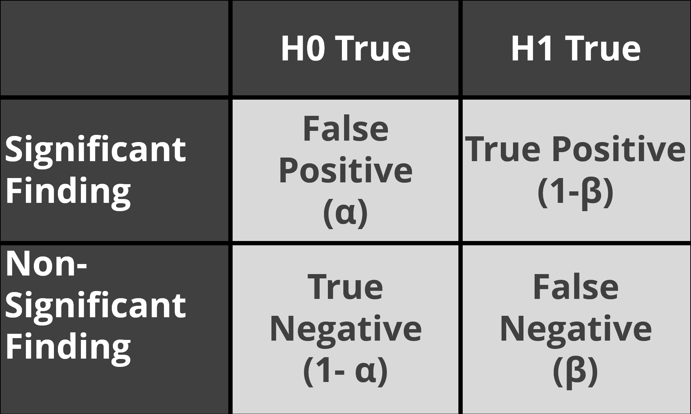
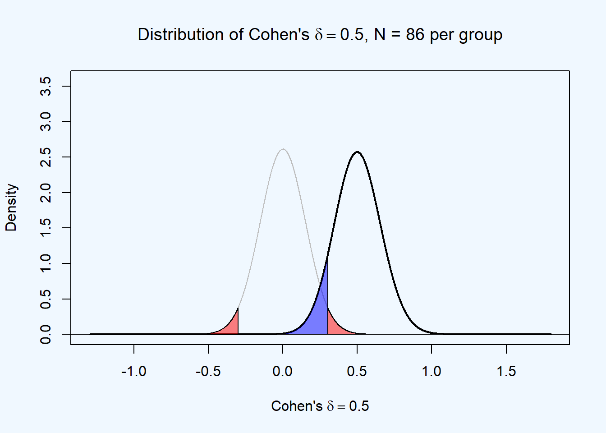
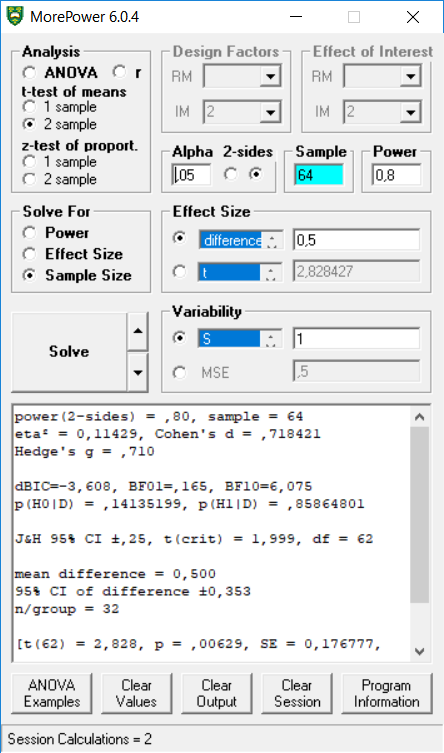
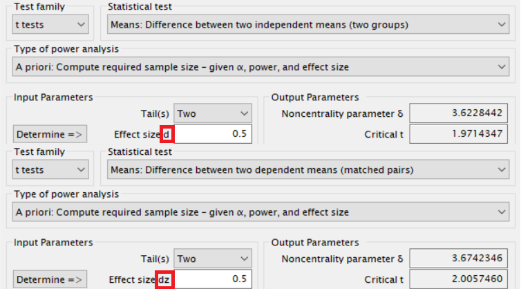
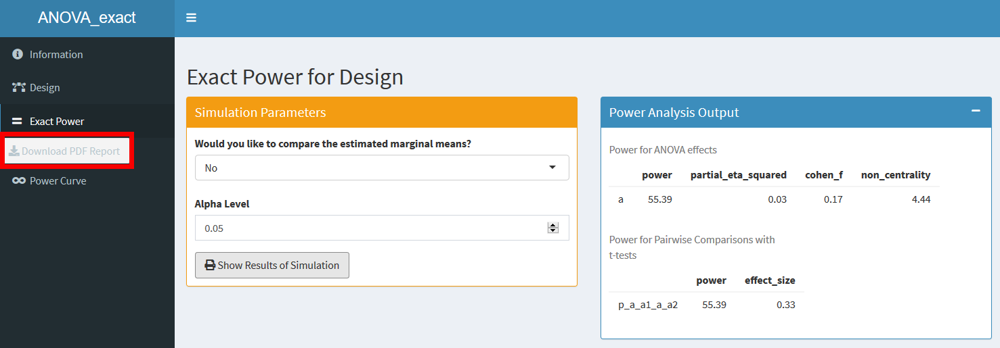

2.3 A-priori power analysis
When designing a study where the goal is to observe a statistically significant effect, researchers often want to make sure their sample size is large enough to have sufficient power to detect effects they expect, or effects they are interested in observing. This is done by performing an a-priori power analysis. Given a specified effect size, alpha level, and desired power, an a-priori power analysis will inform you about the sample size you need to collect. In Figure 2.8 you see how the statistical power increases as the number of observations (per group) in an independent t-test with an alpha level of 0.05 increases.
It is important to highlight what the goal of a power analysis is, and what isn’t the goal. The goal of an a-priori power analysis is not to achieve sufficient power for the true effect size. The true effect size is unknown. The goal of an a-priori power analysis to achieve sufficient power given a specific assumption of the true effect size. Researchers often complain that a-priori power analysis is impossible given uncertainty about the true effect size. But when we design a study, we are uncertain about many things. We are not sure our data will be normally distributed, whether there will be a floor or ceiling effect, whether our manipulation works in a specific population, or whether our theory is true. We design studies based on assumptions. If our assumptions are wrong, we learn from our data.
This goal of a-priori power analysis is perhaps best illustrated by the useful recommendation to make sure your study is well powered to demonstrate the presence, and the absence, of an effect. For example, you might want to perform an a-priori power analysis for an equivalence test that has has sufficient power to reject an effect size observed in an earlier study using the small telescopes approach, while also having sufficient power for a smallest effect size that would theoretically be predicted. We compute power, assuming either of these two effect sizes are the true effect size, and aim to collect the largest sample size that either of these analyses indicate. This does not guarantee we have sufficient power for the true effect size - it simply means we have sufficient power given an assumption of what the true effect size might be. After collecting the data, we draw inferences about what we have learn, under the assumption of a true effect of a specific size. We do not draw conclusions about the (always unknown) ‘true’ effect size. Therefore, an a-priori power analysis is useful, as long as we have interesting assumptions about what effect sizes we might be interested in.
Figure 2.8: Power curve for an independent t-test as a function of the sample size.

A-priori power calculations are performed under the assumption that there is an effect. In practice, it is of course also possible that there is no effect (e.g., d = 0). If there is no true effect, and you want to use formally correct language, power is undefined. Statistical power is a concept that can only be computed assuming there is a true effect. If there is no true effect, you will still observe significant effects, but these ar Type 1 errors, or false positives. These occur at your chosen alpha level (e.g., 5% of the time). If you perform a hypothesis test, there are four possible outcomes:
- False positives or Type 1 errors, indicated by α (you observe a significant test result when H0 is true)
- False negatives or Type 2 errors, indicated by β (you observe a non-significant result when H1 is true)
- True negatives, indicated by 1-α (a non-significant result when H0 is true)
- True positives, indicated by 1-β (a significant test result when H1 is true)
Figure 2.9: Four possible outcomes in a null hypothesis significance test.
The goal of an a-priori power analysis is to increase the sample size up to the level that the desired power, the probability of finding a significant result if there is a true effect, or 1-β, is at a desired level for an effect size one is interested in detecting, given a specific alpha level.
In Figure 2.10 you see two distributions. The left (grey) distribution is centered at 0. This is our model for the null hypothesis. If the null hypothesis is true we can find statistically significant results if the effect size is extreme enough (in a two-sided test either in the positive or negative direction), but these would be Type 1 errors (the red areas under the curve).
The right (black) distribution is centered at an effect of d = 0.5. This is our model for the alternative hypothesis, where we expect a true effect in the population of d = 0.5. Even though there is a true effect, we will not always find a statistically significant result. This happens when, due to random variation, the observed effect size is too close to 0 to be statistically significant. These results would be false negative results (the blue area under the curve).
Figure 2.10: Null and alternative distribution, assuming d = 0.5, alpha = 0.05, and N = 86 per group.
If we want to increase the statistical power, we are trying to reduce the size of the blue area. One way to do this would be to increase the effect size. This would shift the entire distribution to the right, and reduce the size of the blue area. Although there are ways in controlled experiments to increase the standardized effect size (e.g., by reducing statistical variation in the data), often the effect size is what it is. All we can do is increase the sample size. This will make the distribution around 0.5 more narrow, and this reduces the blue area. You can check this in an online shiny app that reproduces the plot.
2.3.1 Performing a power analysis.
There is a wide range of software tools that can help you to perform an a-priori power analysis. Sometimes statistical power can be analytically computed based on closed formulas, and in other situations power can be computed by performing simulations. If we simulate thousands of studies, and count the percentage of studies that are statistically significant, we have an estimate of the statistical power of the test. The code below computes the statistical power (using the power.t.test in base R) assuming an effect size of d = 0.5, and alpha level of 0.05, and a desired power of 90%.
power.t.test(delta = 0.5,
sig.level = 0.05,
power = 0.9,
type = "two.sample",
alternative = "two.sided")##
## Two-sample t test power calculation
##
## n = 85.03129
## delta = 0.5
## sd = 1
## sig.level = 0.05
## power = 0.9
## alternative = two.sided
##
## NOTE: n is number in *each* groupThe output tells us we need to collect 85.03 observations. Because observations do not come in decimals (we can hardly cut 0.03 from a participant) we need to collect 86 observations. We could also get this answer through simulations.
set.seed(600746) #set a seed for reproducible simulations
p <- numeric(100000) #set up empty variable to store all simulated p-values
#Run simulation
for(i in 1:100000){ #for each simulated experiment
x <- rnorm(n = 85, mean = 0, sd = 1) #Simulate data group 1
y <- rnorm(n = 85, mean = 0.5, sd = 1) #Simulate data group 2
z <- t.test(x, y) #perform the t-test
p[i] <- z$p.value #get the p-value and store it
}
#Calculate power: sum significant p-values, divide by 100000 simulations
(sum(p < 0.05)/100000) #power## [1] 0.90015We see that after 100000 simulations with 85 participants, the estimated power is 0.90015 with 85 participants in each group. The analytic solution tells us power is 0.899894. The more simulations you perform, the more accurate the power estimate will be (as we see, 100000 simulations gives very accurate results).
The way you perform the power analysis depends on the software you use. There are excellent software packages for power analysis, such as PASS or SAS, but these solutions are rather expensive. There are also freeware solutions, such as the widely used G*Power, MorePower by Campbell and Thompson, and PANGEA by Jake Westfall.
There is also a range of options in R. The default stats package has power functions for t-tests, proportions, and ANOVA, the pwr package has a wider range of options, pwr2ppl by Chris Aberson accompanies his excellent book on power analyses (Aberson, 2019Aberson, C. L. (2019). Applied Power Analysis for the Behavioral Sciences: 2nd Edition (2 edition). Routledge.), powerlmm by Kristoffer Magnusson performs power analyses for two- and three-level linear mixed models, and Superpower created by Aaron Caldwell and myself does power analyses for complex ANOVA designs.
It takes time to learn to use this software correctly. You will need to sit down for a few hours and go through vignettes or read the accompanying publications, before you know what to do. In our online manual for Superpower, we compare Superpower against G*Power, pwr, pwr2ppl and MorePower. Each software package will have slightly different design philosophies. In G*Power you are expected to enter the standardized effect size d, while in MorePower we enter the mean difference and the standard deviation, and in Superpower we need to enter the means and standard deviations for each condition. In general I recommend to always think about the raw pattern of means you expect, before you perform a power analysis. This typically leads to more realistic effect sizes estimates than the use of standardized effect sizes (where researchers all too often ‘expect’ a d = 0.5 just because that is the default value in G*Power).
Figure 2.11: Example of a power analysis in G*Power.

Figure 2.12: Example of a power analysis in MorePower.
pwr::pwr.t.test(d = 0.5,
sig.level = 0.05,
power = 0.8,
type = "two.sample",
alternative = "two.sided")##
## Two-sample t test power calculation
##
## n = 63.76561
## d = 0.5
## sig.level = 0.05
## power = 0.8
## alternative = two.sided
##
## NOTE: n is number in *each* groupdesign_result <- Superpower::ANOVA_design(design = "2b",
n = 86,
mu = c(0.5, 0),
sd = c(1, 1),
plot = FALSE)
# Plot power curve (from 5 to 200)
Superpower::plot_power(design_result, max_n = 200, verbose = FALSE)
Figure 2.13: Example of a power analysis plot in Superpower.
2.3.2 Justifying the effect size used in an a-priori power analysis
One challenge in power analysis is that you never know the true effect size. This leads to the ‘sample size samba’ (Schulz & Grimes, 2005Schulz, K. F., & Grimes, D. A. (2005). Sample size calculations in randomised trials: Mandatory and mystical. The Lancet, 365(9467), 1348–1353.). Researchers go back and forth between the effect size they expect, and the sample size they are willing to collect, until they ‘expect’ the effect size that, in an a-priori power analysis, leads to the sample size they are willing to collect. This practice obviously makes a power analysis a useless procedure. If you perform an a-priori power analysis, it is essential that you have a good justification for the effect size you rely on, or the result of the power analysis has no value.
2.3.2.1 Using a smallest effect size of interest
Best practice is to justify an a-priori power analysis based on a smallest effect size of interest. Because the population effect size is always uncertain (indeed, estimating this is typically one of the goals of the study) this means there is considerable uncertainty about the achieved power in any study (see Figure 2.2). However, there the smallest effect size of interest is not uncertain. A smallest effect of interest may be subjective (one researcher might find effect sizes smaller than d = 0.3 meaningless, while another researcher might still be interested in effects up to d = 0.1), but it does not have uncertainty. This means that if you enter it in an a-priori power analyses, you will be guaranteed to have the desired power (or higher power) for the smallest effect size you care about. The topic of how to justify a smallest effect size of interest is discussed in a dedicated chapter.
2.3.2.2 Using an estimate of a meta-analysis
As we will see in the chapter on bias it is regrettably not true that effect size estimates from meta-analyses are always accurate. They can be biased, sometimes substantially so. Furthermore, meta-analyses typically have considerable heterogeneity, which means that the meta-analytic effect size estimate differs for subsets of studies that make up the meta-analysis. So, although it might seem useful to enter a meta-analytic effect size estimate in your power analysis, you need to take great care before doing so.
If you want to enter a meta-analytic effect size estimate in an a-priori power analysis, you need to consider three things. First, the studies included in the meta-analysis should be similar enough to the study you are performing that it is reasonable to expect a similar effect size. In essence, this requires evaluating the generalizability of the effect size estimate to your study. Carefully consider differences between the meta-analysed studies and your study, with respect to the manipulation, the measure, the population, and any other relevant variables. Second, check whether the effect sizes reported in the meta-analysis are homogeneous. If not, and there is considerable heterogeneity in the meta-analysis, it means not all included studies can be expected to have the same true effect size estimate. This is almost always true. Choose the meta-analytic estimate for the subset of studies that most closely represent your planned study (this is why it is important to make sure others can reproduce your meta-analysis. Third, the meta-analytic effect size estimate should not be biased. Check the bias detection tests that are reported in the meta-analysis, and consider bias corrected effect size estimates (even though these estimates might still be biased, and not reflect the true population effect size).
Table 2.3: Overview of recommendations when justifying the use of a meta-analytic effect size estimate for a power analysis.
| What to take into account | How to take it into account? |
|---|---|
| Are the studies in the meta-analysis similar? | Are the studies in the meta-analyses very similar in design, measure, an population to the study you are planning? Evalaute the generalizability of the effect size estimate to your study. |
| Are the studies in the meta-analysis homogeneous? | Is there heterogeneity in the meta-analysis? If so, use the meta-analytic effect size estimate of the most relevant homogenous subsample. |
| Is the effect size estimate unbiased? | Did the original study report bias detection tests, and was there bias? If so, it might be wise to use a more conservative effect size estimate, based on bias correction techniques (e.g., PET-PEESE) while acknowledging these corrected effect size estimates might not represent the true meta-analytic effect size estimate. |
2.3.2.3 Using an estimate from a previous study
Statisticians have warned against using effect size estimates from small samples in power analyses. Leon, Davis, and Kraemer (2011Leon, A. C., Davis, L. L., & Kraemer, H. C. (2011). The Role and Interpretation of Pilot Studies in Clinical Research. Journal of Psychiatric Research, 45(5), 626–629. https://doi.org/10.1016/j.jpsychires.2010.10.008) write:
Contrary to tradition, a pilot study does not provide a meaningful effect size estimate for planning subsequent studies due to the imprecision inherent in data from small samples.
The two main reasons researchers should be careful when using effect sizes from the published literature in power analyses is that effect size estimates from small studies are inaccurate, and that publication bias inflates effect sizes. Bias can even emerge when researchers do not take an effect size estimate from the literature, but perform the pilot study themselves, due to follow-up bias (Albers & Lakens, 2018Albers, C. J., & Lakens, D. (2018). When power analyses based on pilot data are biased: Inaccurate effect size estimators and follow-up bias. Journal of Experimental Social Psychology, 74, 187–195. https://doi.org/10.1016/j.jesp.2017.09.004). Figure 2.14 illustrates that for a 3 group ANOVA with 15 participants in each group, only effects with a partial eta squared larger than 0.133 will be statistically significant. But even if researchers are willing to follow up on smaller effect sizes, entering an effect size estimate of \(\eta_p^2\) = 0.01 in an a-priori power analysis would require a total sample size of 957 observations for 80% power. If researchers only follow up on pilot studies when they leads to feasible sample sizes, their effect size estimates will be biased.
Figure 2.14: Distribution of partial eta squared under H0 (grey curve) and a true effect of 0.0588 (black curve).

In essence, the problem illustrated in Figure 2.14 is that the effect sizes we end up using four our power analysis do not come from a full f-distribution, but that we ignore small effect sizes, and thus perform power analyses based on a truncated F-distribution. It is possible to correct for bias, using some assumptions about bias. For example, imagine we observe a result in the literature for a One-Way ANOVA with 3 conditions, reported as F(2, 42) = 0.017, \(\eta_p^2\) = 0.176. Taking this effect size at face value, entering it in an a-priori power analysis would suggest we need to collect 27 observations in each condition. However, using the BUCSS R package (Anderson et al., 2017Anderson, S. F., Kelley, K., & Maxwell, S. E. (2017). Sample-size planning for more accurate statistical power: A method adjusting sample effect sizes for publication bias and uncertainty. Psychological Science, 28(11), 1547–1562.), we can perform a power analysis that attempts to correct for bias.
library(BUCSS)
ss.power.ba(
F.observed = 4.5,
N = 45,
levels.A = 3,
effect = c("factor.A"),
alpha.prior = 0.05,
alpha.planned = 0.05,
assurance = 0.5,
power = 0.8,
step = 0.001
)## [[1]]
## [1] 73
##
## [[2]]
## [1] 2.012This analysis suggests collecting 73 participants in each condition, based on a bias corrected (under a specific model of publication bias assuming only significant effects ( with p < 0.05) being published) non-centrality parameter of 2.012. It is possible that the bias corrected non-centrality parameter is zero, in which case it is not possible to correct for bias (or the true effect size might be 0).
Instead of formally modeling a correction for publication bias, researchers can simply use a more conservative effect size estimate, for example by computing power based on the lower limit of 60% two-sided confidence interval around the effect size estimate (Perugini et al., 2014Perugini, M., Gallucci, M., & Costantini, G. (2014). Safeguard power as a protection against imprecise power estimates. Perspectives on Psychological Science, 9(3), 319–332.), which they refer to as safeguard power.
Both these approaches lead to a more conservative power analysis, but not necessarily a more accurate power analysis. It is simply not possible to perform an accurate power analysis on the basis of an effect size estimate from a study that might be biased and had a small sample size.
A sample size from a single study can be used if two conditions are met. First, there was a low risk of bias (e.g., the effect size estimate comes from a Registered Report, or from an analysis which results would not have impacted the likelihood of publication). Second, the sample size is large enough to yield relatively accurate effect size estimate, based on the width of a 95% CI around the observed effect size estimate. There is always uncertainty around the effect size estimate, and entering the upper and lower limit of the 95% CI around the effect size estimate might be educational about the consequences of the uncertainty that is present for an a-priori power analysis.
Table 2.4: Overview of recommendations when justifying the use of an effect size estimate from a single study.
| What to take into account | How to take it into account? |
|---|---|
| Is there a risk of bias? | Evaluate the possibility that you would not have used, or had access to, the effect size estimate if had been smaller. Examine the difference when entering the reported, and a bias corrected, effect sizes estimate in a power analysis. |
| How large is the uncertainty? | Studies with a small number of observations have large uncertainty. Consider the possibility of using a more conservative effect sizes estimate to reduce the possibility of an underpowered study for the true effect size (such as a safeguard power analysis). |
2.3.2.4 Using a heuristic
The most commonly entered effect size estimate in an a-priori power analysis for an independent t-test is d = 0.5. The reason is that it is the default in G*Power. It is also an effect size that Cohen (1988Cohen, J. (1988). Statistical power analysis for the behavioral sciences (2nd ed). L. Erlbaum Associates.) referred to as a ‘medium’ effect size, which seems less pretentious than expecting a ‘large’ effect size (d = 0.8) and leads to a required sample size that is substantially more manageable than when entering a ‘small’ effect size (d = 0.2). Cohen would probably not have chosen d = 0.5 as a default option for a power analysis tool designed for psychologists, as he wrote (1988, p. 13):
Many effects sought in personality, social, and clinical-psychological research are likely to be small effects as here defined, both because of the attenutation in validity of the measures employed and the subtlety of the issues frequently involved.
The large variety in research topics in psychology means that any ‘default’ or ‘heuristic’ you use in an a-priori power analysis is wrong, and more importantly, it is likely to be more substantially wrong than using any of the other strategies outlines here. Cohen’s benchmarks should not be used in a-priori power analysis (Correll et al., 2020Correll, J., Mellinger, C., McClelland, G. H., & Judd, C. M. (2020). Avoid Cohen’s “Small”, “Medium”, and “Large” for Power Analysis. Trends in Cognitive Sciences, 24(3), 200–207. https://doi.org/10.1016/j.tics.2019.12.009).
Some researchers have wondered what a better default would be, if researchers have no other basis to decide upon an effect size for an a-priori power analysis. For example, sometimes it is recommended to perform a power analysis based on an average effect size in psychology. For example, Brysbaert (2019Brysbaert, M. (2019). How many participants do we have to include in properly powered experiments? A tutorial of power analysis with reference tables. Journal of Cognition, 2(1), 16. https://doi.org/10.5334/joc.72) recommends d = 0.4 as a default, which is approximately the average effect size in meta-meta-analyses, analysing effect sizes in entire scientific disciplines. However, such meta-analytic effect sizes estimated might be inflated due to publication bias, and there is huge heterogeneity in each field, so the average will often not be close to the effect size in the research line your are performing. As such, the use of such estimates is also not recommended.
2.3.3 Justifying the error rates used in an a-priori power analysis
TOO BE COMPLETED
2.3.4 Some advice when using G*Power
G*Power is one of the most widely used software tools for power analysis (Bakker et al., 2020Bakker, M., Veldkamp, C. L. S., Akker, O. R. van den, Assen, M. A. L. M. van, Crompvoets, E., Ong, H. H., & Wicherts, J. M. (2020). Recommendations in pre-registrations and internal review board proposals promote formal power analyses but do not increase sample size. PLOS ONE, 15(7), e0236079. https://doi.org/10.1371/journal.pone.0236079). The option for power analysis for a Pearson’s correlation coefficient is under the Exact test family (Correlation: Bivariate normal model). The “Correlation: Point biserial model” option under the t-tests family is for correlations where one variable is dichotomous. The difference is small, but the required sample size is typically a few observations larger for Pearson’s correlation coefficient.
Figure 2.15: The options for a power analysis for Pearson’s correlation(above) and the point biserial correlation (when one variable is dichotomous).

Although the effect size for an independent t-test and dependent t-test are often both referred to as Cohen’s d, they differ, and are calculated in different ways. Cohen himself distinguished between \(d_s\) and \(d_z\) (Lakens, 2013Lakens, D. (2013). Calculating and reporting effect sizes to facilitate cumulative science: A practical primer for t-tests and ANOVAs. Frontiers in Psychology, 4. https://doi.org/10.3389/fpsyg.2013.00863). You should not enter Cohen’s d for a power analysis for a dependent t-test (nor should you directly compared Cohen’s d from a between design with Cohen’s d for a within design, nor should you use the benchmarks Cohen provided for a small (0.2), medium (0.5), and large (0.8) effect be used for Cohen’s \(d_z\)). Make sure you are entering the correct effect size. Cohen’s \(d_z\) can be calculated from the t-value for a dependent t-test and the sample size as follows:
\[d_z = {\frac{t}{\sqrt{n}}} \]
Figure 2.16: Power for a dependent and independent t-test require entering Cohen’s dz and d, respectively.
The third issue that researchers often miss is that G*Power has a very unfortunate default setting for power analyses for within subject ANOVA tests. In Figure 2.17 we see on the left how we can directly calculate Cohen’s \(f\) (the effect size one needs to enter for ANOVA power analyses) from partial eta squared. A medium effect size for \(\eta^2_p\) of 0.588 equals a Cohen’s \(f\) of 0.25. If we specify an expected correlation between dependent variables of 0.8, have 3 repeated measurements, one condition, and want to achieve 95% power with an alpha level of 0.05, we need a sample size of 19. However, if out value for \(\eta^2_p\) comes from the scientific literature or statistical software such as SPSS, this effect size measure already has the correlation between observation incorporated. If we would simply enter it in G*Power, we take into account the correlation twice, which leads to a massively smaller sample size. Instead, we need to click on the “Options” button and check the radiobutton before “As in SPSS”. We see that “Effect size f” changes into “Effect size f(U)”, and the box “Corr among rep measures” has disappeared on the right. This is because the correlation no longer needs to be entered separately - it is already taken into account in the \(\eta^2_p\) as SPSS computes it. Most importantly, we now see that the sample size we need to achieve 95% power has changed to 127. This is a big difference, and I have seen people make this mistake very often. If you use G*power for power analyses for ANOVA designs, I recommend always double checking the Options setting (and maybe repeat your analysis in software such as Superpower just to double check).
Figure 2.17: Power analysis for repeated ANOVA in G*Power by default expects a partial eta squared effect size that does not take the correlation between measurements into account.

2.3.5 A-priori power analysis for the absence of an effect
It is
2.3.6 Reporting an a-priori power analysis.
As with all the analyses you rely on in your work, make sure the power analysis is computationally reproducible. If you performed power analyses in R, you can store the script. In G*Power, you can save the several power analyses you performed consecutively in the app under the ‘protocol of power analysis’ tab by saving them as a .rtf file or printing them as a pdf file.
Figure 2.18: G*Power allows you to easily save all details about the power analysis you performed.

If you use the Superpower Shiny app for more complex ANOVA designs, you can print a pdf file with all detailed about the power analysis you performed. Sharing the code or a printout of the power analysis will capture all required information about the power analysis you performed, which is often preferable over attempting to communicate all this information verbally.
Figure 2.19: Superpower allows you to print a report with all information about the power analysis you performed.
Providing a reproducible report is sufficient to clarify the power calculation, but not the reasons behind the power calculations. Your decision for the desired Type 1 and Type 2 error rate needs a justification, and most importantly, the effect size you have powered for needs to be justified. If your effect size estimate is based on the existing literature, provide a full citation, and preferably a direct quote from the article. If your effect size is based on an empirical estimate from the scientific literature, you will need to address 1) uncertainty, and 2) bias (Anderson et al., 2017Anderson, S. F., Kelley, K., & Maxwell, S. E. (2017). Sample-size planning for more accurate statistical power: A method adjusting sample effect sizes for publication bias and uncertainty. Psychological Science, 28(11), 1547–1562.; Taylor & Muller, 1996Taylor, D. J., & Muller, K. E. (1996). Bias in linear model power and sample size calculation due to estimating noncentrality. Communications in Statistics-Theory and Methods, 25(7), 1595–1610.). If your effect size is based on a smallest effect size of interest, this value should not just be stated, but justified (e.g., based on theoretical predictions, practical implications, or effect sizes observed or detectable in the literature).
Table 2.5: Overview of recommendations when reporting an a-prior power analysis.
| What to address? | How to address it? |
|---|---|
| List all primary analyses you plan to do. | Following JARS guidelines, specify all primary analyses for which you want to control Type 1 and Type 2 error rates |
| Specify the alpha level for each analysis | List and justify the chosen alpha level for each analysis. Make sure to correct for multiple comparisons where needed. |
| What is the desired power? | List and justify the desired power for each analysis |
| For each power analysis, specify the effect size metric, the effect size, and the justification for powering for the effect size. | Report the effect size metric (e.g., Cohen’s \(d_z\), Cohen’s f), the effect size (e.g., 0.3). and the justification for the effect size, whether it is based on a smallest effect size of interest, a meta-analytic effect size estimate, or the estimate of a single previous study. |
| Make sure the power analysis is reproducible. | Include the code used to run the power analysis, or print a report containing the details about the power analyses you performed. |
Page built: 2020-08-15